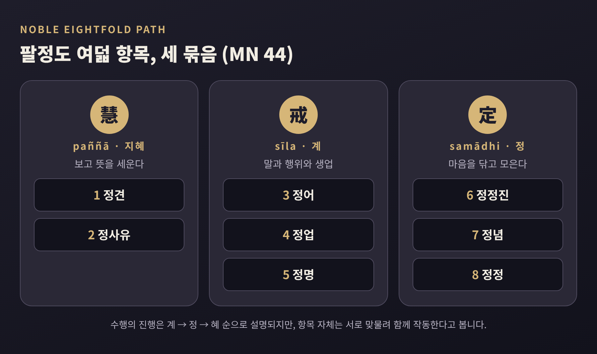

이번 글에서는 불교의 사성제와 팔정도를 비교종교학의 눈으로 정리해 보겠습니다. 사성제는 고(苦)·집(集)·멸(滅)·도(道)의 네 진리이고, 팔정도는 그 마지막 '도'의 구체적 내용입니다. 신앙의 옳고 그름이 아니라, 이 가르침이 어떤 논리로 짜여 있고 전통마다 어디서 해석이 갈리는지를 살펴보려 합니다.
사성제는 붓다의 첫 설법으로 전해지는 『초전법륜경』(SN 56.11)에 나옵니다. 장소는 바라나시 인근의 이시파타나, 흔히 녹야원이라 부르는 곳입니다. 붓다는 다섯 비구에게 먼저 쾌락과 고행이라는 두 극단을 피하는 중도를 말하고, 이어 네 가지 진리를 풀어 설명합니다.
네 진리는 순서가 곧 논리입니다.
이 구조는 의학과 닮았습니다. 1882년 헨드릭 케른이 사성제를 고대 인도 의학의 진단·병인·예후·치료에 견주었고, 이 비유는 널리 퍼졌습니다. 다만 앤더슨 같은 학자는 붓다가 의학 모형을 의도적으로 썼다는 역사적 증거는 충분하지 않다고 지적합니다. 비유로는 유용하되, 사실로 단정하기는 어렵다는 뜻입니다.
초전법륜경에는 한 가지 흥미로운 장치가 더 있습니다. 각 진리를 세 단계로 살피는 방식입니다. 진리 자체를 아는 지혜, 그 진리에서 해야 할 일을 아는 지혜, 그 일을 마쳤음을 아는 지혜입니다. 네 진리에 세 단계를 곱하니 열두 가지 양상, 곧 3전 12행상이 됩니다.
해야 할 일은 진리마다 다릅니다. 고는 철저히 알아야 하고, 집은 버려야 하며, 멸은 실현해야 하고, 도는 닦아야 합니다. 같은 '앎'이라도 대상에 따라 동사가 달라지는 셈입니다. 붓다는 이 열두 가지가 분명해진 뒤에야 완전한 깨달음을 선언했다고 말합니다.
첫 번째 진리의 'dukkha'는 보통 '고통'으로 옮기지만, 학자들은 이 번역이 좁다고 말합니다. 달라이 라마도 '고통'이라는 말이 오해를 부른다고 했습니다. 괴롭지 않은 상태에도 불만족은 깃들기 때문입니다. 그래서 '불만족', '불안정' 같은 대안이 제시됩니다. 어원도 둘로 갈립니다. 축 구멍이 어긋난 수레의 덜컹거림에서 왔다는 전통적 설명이 있고, '불안정하게 서 있음'이라는 설명을 더 지지하는 학자들도 있습니다.
후대 교학에서는 고를 세 가지로 나눕니다.
초전법륜경 자체는 생로병사, 싫은 것과의 만남, 좋은 것과의 이별, 원하는 것을 얻지 못함을 들고 나서 "집착하는 오온이 곧 고"라고 요약합니다. 세 분류가 이 경에 그대로 있는 것은 아니라는 점은 밝혀 둡니다.
두 번째 진리의 원인은 갈애(taṇhā)입니다. 산스크리트로는 '목마름'을 뜻하는 말입니다. 경은 갈애를 셋으로 나눕니다. 감각적 쾌락에 대한 갈애, 존재가 계속되기를 바라는 갈애, 그리고 존재하지 않기를 바라는 갈애입니다. 마지막이 눈에 띕니다. 고통을 피하려 사라지길 바라는 마음조차 갈애로 본다는 점이 이 분석의 특징입니다.
여기서도 해석이 갈립니다. 브래지어와 배첼러 같은 이들은 갈애가 고를 '일으킨다'기보다 고와 '함께 일어난다'고 읽자고 제안합니다. 원인과 결과의 직선보다 동시적 얽힘으로 보자는 시각입니다.
네 번째 진리인 팔정도는 정견·정사유·정어·정업·정명·정정진·정념·정정, 여덟 항목입니다. 모든 항목에 '바른(sammā)'이 붙는데, 이는 도덕적 훈계보다 '있어야 할 방식대로'에 가까운 말입니다. 법륜의 여덟 살이 이 여덟 항목을 상징합니다.
여덟 항목은 다시 세 묶음으로 정리됩니다.
이 묶음의 경전적 근거는 『짧은 문답의 경』(MN 44)입니다. 재가 신자 위사카가 묻고, 비구니 담마딘나가 답하는 대화입니다. 그녀는 팔정도가 세 무더기에 포함된다고 설명합니다. 붓다가 비구니 법사 가운데 으뜸으로 칭찬한 인물이라고 전해집니다.

흥미로운 지점은 순서입니다. 목록은 정견으로 시작하는데, 묶음에서는 정견이 '혜'로 맨 끝에 놓입니다. 비구 보디는 이렇게 풀이합니다. 수행은 계에서 정, 정에서 혜로 나아가고, 정견과 정사유는 처음에는 길을 안내하는 예비 지침으로 작용하다가 마음이 정련된 뒤 성숙한 지혜로 완성된다는 것입니다. 정견 없는 수행은 지도 없이 운전하는 것과 같다는 비유도 곁들입니다. 또한 팔정도는 계단이 아니라 서로 맞물린 요소여서, 진전할수록 여덟이 동시에 작동한다고 봅니다.
『대사십경』(MN 117)은 또 다른 그림을 보여줍니다. 앞의 일곱 항목이 정정(正定)을 받치는 조건이라고 말하고, 정견·정정진·정념이 다른 항목을 따라 돌며 이끈다고 설명합니다. 같은 경은 정견을 두 층으로 나눕니다.
보디는 앞의 것이 선한 행위와 좋은 재생을 돕지만 그것만으로 해탈에 이르지는 못한다고 설명합니다. 뒤의 것은 사성제에 대한 이해와 이어집니다. 그러면 논리가 한 바퀴 돕니다. 사성제의 네 번째 '도'의 첫 항목이 다시 사성제를 아는 일이기 때문입니다. 도는 진리 밖에 있지 않고, 진리를 깊이 보는 과정 그 자체입니다.
전통 안에서는 사성제를 모든 학파가 받아들이는 불교의 근본 교리로 설명합니다. 그런데 문헌 비교를 하는 학자들은 질문을 던집니다.
초기 암기 구절이 "고, 집, 멸, 도"만 나열한 형태였고 '성스러운'과 '진리'라는 말은 나중에 붙었다는 견해도 있습니다. 공식 문장의 문법이 고르지 않다는 점이 여러 자료가 합쳐졌을 가능성의 근거로 거론됩니다.
붓다의 생애를 둘러싼 불확실성도 배경이 됩니다. 스탠퍼드 철학 백과는 입멸 시기를 예전에는 기원전 480년경으로 보았지만 지금은 기원전 405년경으로 보는 학자가 많고, 가르침이 수 세기 동안 구전되었다는 점을 짚습니다. 붓다 자신이 무엇을 가르쳤는지 복원하는 일에는 학자마다 낙관의 정도가 다릅니다.
근대의 읽기에도 눈여겨볼 대목이 있습니다. 19세기 서구 저술가들이 사성제를 불교의 핵심으로 제시했고 이것이 식민지 시대의 불교 이해와 얽혀 있다는 비판이 있습니다. 월폴라 라훌라의 『붓다가 가르친 것』이 사성제를 뼈대로 삼은 것을 두고 '개신교적 불교'의 사례라 부르는 학자도 있습니다. 요즘 위빠사나 지도자들이 사성제를 현세의 심리적 행복 중심으로 설명하는 경향과, 전통적인 '윤회로부터의 자유'라는 목표는 서로 결이 다르다는 지적도 있습니다.
상좌부 전통에서 사성제는 교학의 중심입니다. 사성제에 대한 통찰 자체가 해탈적이며 한 순간에 일어날 수 있다고 봅니다. 목표는 아라한이고, 열반은 유일한 무위법으로 하나입니다. 살아 있는 동안의 열반(유여열반)과 죽음에 이르러 완성되는 열반(무여열반)으로 구분합니다.
대승에서는 사성제가 전면에서 물러나고 공(空)의 통찰과 보살도가 중심에 놓입니다. 해탈한 존재가 세상에서 계속 활동한다는 점을 설명하려고 사성제를 다시 해석했다고 정리됩니다. 『반야심경』이 단적인 예입니다. 사성제를 포함한 기본 가르침들이 공의 자리에서는 적용되지 않는다고 말합니다. 이는 가르침을 부정한 것이 아니라 이제설(二諦說)로 읽힙니다. 가르침은 세속적 차원에서 실재를 정확히 기술하되 실재 그 자체는 아니라는 해석입니다. 경의 기원 자체도 논쟁 중입니다. 낫티어는 중국에서 형성되었다고 주장하고, 하라다 등은 이에 반대합니다.
팔정도도 대승에서는 6바라밀의 틀에 겹쳐 읽습니다. 지계는 정어·정업·정명에, 정진은 정정진에, 선정은 정정에 대응하고, 지혜의 바라밀이 나머지를 이끄는 으뜸으로 놓입니다. 이상향에도 차이가 있습니다. 대승은 보살도를 모두에게 열린 최고의 이상으로 두며, 법화경은 아라한이 아직 정각에 이르지 못했다고 말합니다. 상좌부도 부처가 되는 길을 인정하지만 특별히 드문 존재의 길로 보고 모두에게 권하지는 않습니다.
열반의 이해도 갈립니다. 대승에는 머무르지 않는 열반, 곧 무주처 열반이 있습니다. 부처가 고정된 적멸에 들지 않고 윤회 세계에서 중생을 돕는다는 구상입니다. 폴 윌리엄스는 보살의 열반을 두 모형으로 정리합니다. 중생을 구할 때까지 열반을 미루는 모형, 그리고 유가행파처럼 열반에 머물면서도 세상에서 활동한다는 모형입니다. 대승에는 단일한 열반관이 없다는 점도 분명히 해 둡니다. 선종은 선정만으로도 깨달음에 이를 수 있다는 입장으로 대비되곤 합니다.
사성제의 성격을 가장 잘 보여주는 장면은 『작은 말룽캬경』(MN 63)에 있습니다. 비구 말룽캬풋타는 붓다가 답하지 않은 열 가지 질문이 마음에 걸렸습니다. 우주는 영원한가 유한한가, 영혼과 몸은 같은가 다른가, 여래는 죽은 뒤에도 존재하는가 같은 질문입니다. 답을 주지 않으면 환속하겠다고까지 말합니다.
붓다는 독화살 비유로 답합니다. 독화살을 맞은 사람이 쏜 이의 신분과 화살의 재료를 다 알기 전에는 치료받지 않겠다고 버티면, 답을 얻기 전에 죽는다는 이야기입니다. 그 질문들은 목표와 이어지지 않으며, 자신이 설한 것은 사성제라고 붓다는 말합니다.
여기서 사성제의 성격이 드러납니다. 세계의 기원을 설명하는 형이상학이 아니라, 지금 겪는 문제를 다루는 실천적 틀입니다. 다만 이런 해석 역시 하나의 읽기입니다. 형이상학을 배제했다고 보는 입장이 있고, 재생과 업의 세계관이 이미 전제되어 있다고 보는 입장도 있습니다.
정리하면 이렇습니다. 사성제는 진단-원인-치유 가능성-처방이라는 네 걸음의 논리이고, 팔정도는 그 처방을 계·정·혜의 세 훈련으로 풀어낸 것입니다. 상좌부는 이를 아라한의 길로, 대승은 공과 보살도의 틀로 다시 읽었습니다. 역사학은 이 틀이 처음부터 중심이었는지 묻습니다.
이 글에서 다룬 학자들의 입장은 모두 2차 자료에서 정리한 것이어서, 더 깊이 알고 싶으시다면 초전법륜경과 MN 44, MN 117의 번역본을 직접 읽어 보시길 권합니다.
끝으로 한 마디만 더 드리겠습니다. 이 가르침을 믿든 믿지 않든, 사성제는 문제를 정직하게 진단하고 원인을 따지며 해결 가능성을 묻고 방법을 제시하는 하나의 사유 형식이었습니다. 이 형식이 오늘 우리의 질문에도 말을 걸 수 있는지는, 읽는 이의 몫으로 남습니다.